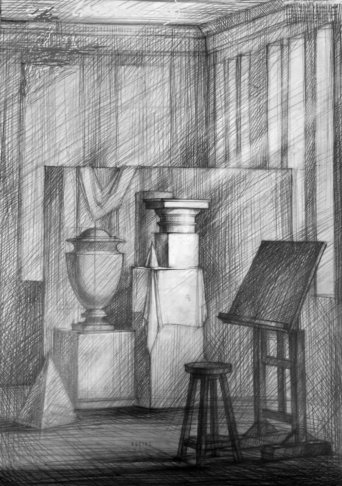
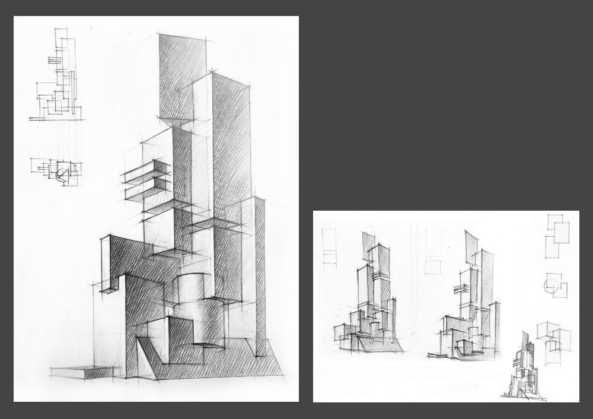

Поступление |
||
|
Поступление на факультет архитектуры Получаемые знания и навыки обучения на факультете архитектуры |
Для того чтобы поступить на архитектурный факультет на бакалавриата нужно сдать егэ по профильной математике и русский язык от 60 баллов. Дальше в самом институте будут 3 вступительных экзамена:. Рисунок фрагмента интерьера, архитектурная композиция и рисунок гипсовой головы.
Количество бюджетных мест: 50. Количество платных мест: 40, платить нужно будет 300000 в год Право на прием на обучение без вступительых испытаний могут: Победители и призеры заключительного этапа всероссийской олимпиады школьников, члены сборных команд Российской Федерации, участвовавших в международных олимпиадах по общеобразовательным предметам и сформированных в порядке, установленном федеральным органом исполнительной власти, осуществляющим функции по выработке и реализации государственной политики и нормативно-правовому регулированию в сфере общего образования Дополнительные баллы: При приеме на обучение по программам бакалавриата, программам специалитета СПбГАСУ начисляет 5 баллов за наличие аттестата о среднем общем образовании с отличием, или аттестата о среднем (полном) общем образовании для награжденных золотой медалью, или аттестата о среднем (полном) общем образовании для награжденных серебряной медалью, или диплома о среднем профессиональном образовании с отличием. Примеры проходных экзаменов прошлых лет:   |
|